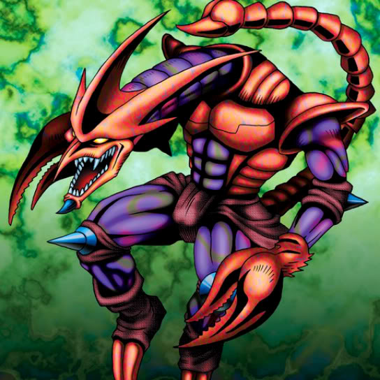

Skull Stalker

Description: "Reduces opposing monster by 300 points when destroyed in battle."
STATS
ATK: 900
DEF: 800DECK COST
Deck Cost per Card: 22EFFECT NOT IMPLEMENTED
Fusion List (6 Possible Fusions)
- Skull Stalker + Bat = Cyber Soldier
- Skull Stalker + Dark Plant = Bean Soldier
- Skull Stalker + Griggle = Bean Soldier
- Skull Stalker + Little Chimera = Tiger Axe
- Skull Stalker + Shadow Specter = Zombie Warrior
- Skull Stalker + Tentacle Plant = Bean Soldier